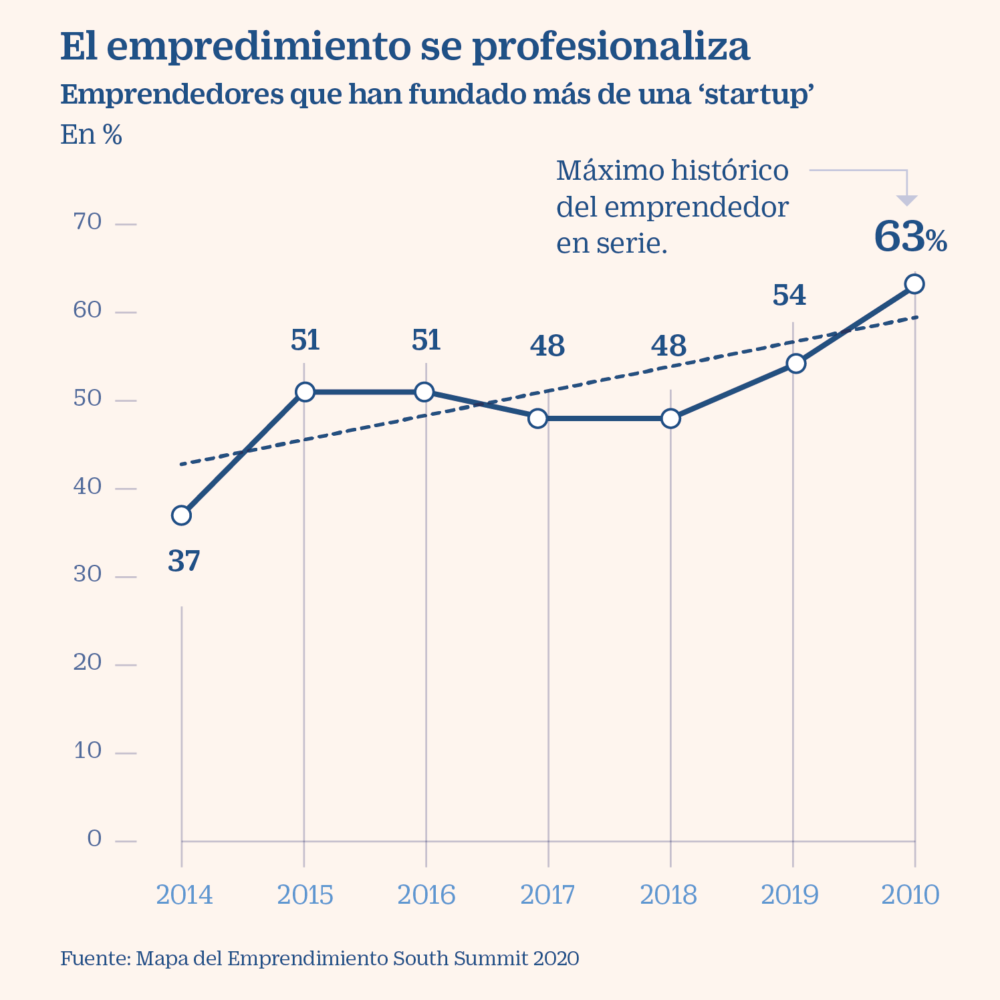
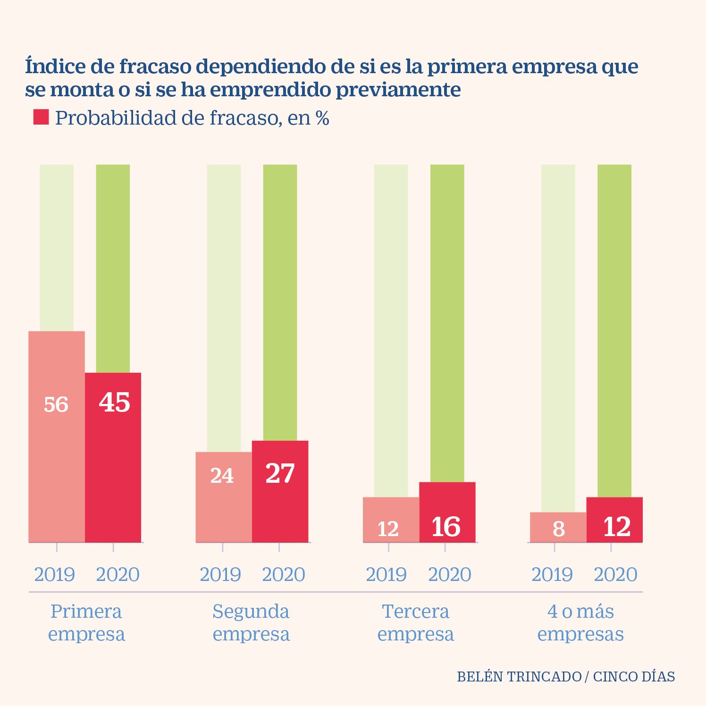

Más actividad emprendedora
El informe GEM España 2019-2020 revela que, antes del COVID, un 6% de los españoles habría decidido crear su propia empresa.
La principal motivación fue alcanzar un aumento en sus ingresos, pero en algunos casos se realizó para "realizar cambios en el mundo" o simplemente por pura necesidad a causa de la falta de empleo. En el menor de los casos, la motivación es continuar el negocio familiar
El perfil del emprendedor suele ser el del hombre de unos 40 años, aunque la diferencia de % con las mujeres es mínima. Suelen embarcarse aquellas personas con un mayor nivel de renta. Las nuevas empresas que se crean suelen pertenecer al sector de la manufactura y de la construcción, y la mayoría no cuentan con más de cinco empleados.
Los emprendedores suelen ser recurrentes
El informe "Mapa del emprendimiento" concluye que el 63% de los emprendedores en España han montado más de una startup, con un crecimiento del 8% respecto al año anterior.
El dato más adelantador al respecto es que, la probabilidad de éxito aumenta cuanta más experiencia tiene el empresario. Los proyectos de personas sin experiencia fracasan un 56%, mientras que un veterano sufre solo un 8%.
El perfil del emprendedor como profesión es el de hombre de unos 35 años y con títulos universitarios, y llamados a la creación de empresas por su propia vocación.
